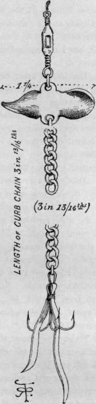

Artificial Baits
Description
This section is from the book "Sea Fishing", by John Bickerdyke. Also available from Amazon: Sea Fishing.
Artificial Baits
The principal, I may say only, artificial baits of any use to the sea fisherman are those used for whiffing, spinning, or casting as a fly. Of flies, so called, there is little or nothing to be added to the remarks in Chapter V. ; so I will now devote a few pages to a short description of the best whiffing baits. Ranking almost, if not quite, first comes the ' Sarcelle.' It was designed by Mr. C. A. Payton.
Sarcelle
'Sarcelle' of the ' Field,' and is a very successful combination of the baby spinner and the band bait. Its chief use is for shoal bass which are feeding close to the surface. The illustration, by the way, is not a true and original Sarcelle, but an improved edition, made by a friend whose kind suggestions I have already gratefully acknowledged.
Anybody can make a band bait for themselves in five minutes with two hooks (if eyed so much the better), a piece of gut, and a couple of indiarubber bands; the illustration shows so clearly how the thing is done that it requires no written description.
Band Rait With Eyed Hooks.
The baby spinner, of which Messrs. C. & R. Brooks, of Plymouth, claim to be the inventors, is a very valuable little addition to the natural bait, placed above a single hook ; it spins on the gut and rests on a single glass bead. It does not wear the round gut as might be supposed, but for fish of any size it is certainly desirable to use gimp in connection with this particular form of bait. Another capital bait is a piece of sole or other fish skin cut fish shape and hung below one of these spinners, with or without another piece of sole-skin hung below the hook as illustrated.

Baby Spinner.
Baby Spinner With Sole-Skin Bait Below.
A very excellent artificial bait is a sort of elongated baby spinner working on the shank of the hook, which gives a very fair imitation of a launce or sand-eel flitting through the water. But the best sand-eel is one cut carefully out of sole or gurnard skin and sewn over the shank of the hook, below the baby spinner. The back should be coloured with green varnish, and the mouth should be left unsewn, so that the water may flow in as it does in a phantom minnow and plump up the bait.
A very favourite bait for small pollack which are caught in spring on the Cornish and Devon coasts, is an arrangement curious both in form and name—to wit, the Belgian Grub. One is shown in the illustration. It consists of a hook on which is moulded a dumpy body of plaster of Paris or other cement, painted various colours—sometimes yellow, sometimes yellow and red, or yellow and white. Mr. Farlow showed me a quantity which he had specially prepared for a very successful fisherman, in which the plaster was coloured black and the rubber tail had been apparently stained with ink.
ORDINARY TIN SPINNER. FOR SEA FISHING BELGIAN GRUB.
One of the most deadly of all the sea baits which have ever been invented is known as the rubber sand-eel, though I am quite convinced that the fish take it for either a small conger or a large worm of some kind, for it in no way resembles a sand-eel. It is cut out of a piece of indiarubber tubing and placed on a hook with a twisted shank, which causes it to wobble through the water, and is now usually fitted with a baby spinner at the head. I have known those made of red rubber prove excellent artificial baits for large pollack; but better still is one of black rubber tubing, double as large as that shown in the engraving. These baits are made in various colours— black, white, red, or green ; sometimes one colour is best, sometimes another. Cod, which will take them when fished near the bottom, appear to prefer the white rubber ; while coalfish and bass are perhaps more often taken on the grey, green, and black. The red of the vulcanised and the black of the natural rubber are, so far as my experience goes, a long way the best for pollack.
Rubber Eel With Baby Spinner.
Coming to baits which are more familiar to freshwater fishermen, among the best is undoubtedly the phantom minnow. I have caught a quantity of large pollack on a phantom deep red in colour and about from three to four inches in length. A blue-backed phantom with a silver belly is a good bait for bass, but not so good as the natural bait. Messrs. Carswell, of Glasgow, have recently brought out a patent improved phantom made of silk lined with rubber. Like the Devon bait, it slips up the line out of the way when a fish is being played, and has a better spin than those in which the shoulder triangle flies out on a length of twisted gut It is, in my opinion, quite the best phantom made. As a rule, these freshwater baits are not properly mounted for sea fishing, the triangles are not strong enough in the wire, and steel swivels are commonly used which are quite unsuitable for salt water.
Carswell's Phantom.
The Clipper (tassel can be omitted).
Cartman Spinner.
Geen's Spiral Spinner.
There is an excellent bait which has caught me many a fish both in fresh and salt water — bass, pollack, pike, trout, perch and salmon—and that is Gregory's Clipper. One great advantage it has is that it revolves on the gimp, while the triangles do not revolve. In many baits the triangles spin round with great speed, and one is very apt to prick fish without hooking them. Speaking generally, sea fish take a bait so ravenously if they come at it at all, that a single hook is usually quite as effective as a triangle. The best clippers have golden backs and silver bellies.
A comparatively new bait, in which, also, the triangle does not spin, is the Cartman spinner. It spins easily and rapidly, and has the advantage, for pollack fishing, of containing its own lead. It is usually adorned with a bunch of red wool round the triangle. I have had some made specially for me with the omission of this wool and the internal part of the bait gold-plated, which greatly adds to its attraction. Made in this way, I am quite sure it would be an excellent bait for sea trout, both in the sea and fresh water. Mackerel, of course, take small sizes, and it certainly should be good for bass. Its particular value is in dead water or when whiffing has to be carried on with the tide, for it spins with the least provocation. This good quality it shares with the well-known and really excellent spiral bait invented by Mr. Geen.
A very novel bait was sent me recently by a friend, a great bass fisherman, who assures me that it has been most successful in his hands, and that he never intends to use any other artificial bait for whiffing. It is not so suitable for casting. It simply consists of a piece of curbed chain headed with fans similar to, but rather stouter than, those on a Chapman spinner. It is shown life-size in the illustration on p. 143. Doubtless its flexibility and the sparkle of the links make it so exceedingly attractive. Anyone could construct a bait of this kind for himself, but I understand that Mr. Walbran, of Leeds, is about to patent it.
CURB CHAIN BAIT.
The large feather baits perhaps come within this part of the subject, but by reason of their material let us honour them with the name of flies, and give them place in the next chapter. They are most successfully used for pollack and coalfish, and at times bass take them greedily. The artificial fly made of fibres obtained from the tail of the dogfish, also described in the following chapter, should be specially noted. It has a great reputation among the fishermen in the Orkneys.
Another very remarkable bait, sent by one of my many kind correspondents in sea-fishing matters, and my long list is finished. It is a capital imitation of a small fish made out of the wing feather of a bird. It is shaped with scissors and afterwards painted, and is capable of much variation according to the fancy of the maker. The illustration is another of Mr. Pritchett's drawings of the actual thing—a bait which has, maybe, taken not a few lythe and saithe off the wild coasts of the Orkney Islands. No doubt it could be fitted more neatly with hook, swivel, etc, but it could hardly be made more effective. One of my long-shanked Salmo-irritans hooks might be useful for this bait.
Those who possess the least ingenuity need never be at a loss for a bait for sea fishing, or, at least, for so many of the sea fish as will take an artificial bait. A piece of white rag on a hook, the stem of a tobacco pipe threaded on the shank, a threepenny-bit hammered out with a hole bored in it, a teaspoon or dessertspoon bowl bored with a hole and decorated with a hook or two, a piece of tin from a sardine box cut to the shape of a fish and given a twist to make it spin, a piece of indiarubber band or tubing, a few feathers and wool from an old rug— these and many more simple and easily obtained materials can be made up into killing sea-fish baits. The things that anglers should never be without are hooks and leads of various weights, swivels, gut, and gimp. With these, he ought to be able to make almost any tackle he may require, perhaps not so neatly as that which he can buy, but certainly more lasting. Not that I wish to disparage bought tackle, though the fastenings-off are not always the best, and hooks not always tested. But in outlandish places, hundreds of miles from tackle-shops, the exercise of a little ingenuity and trouble on the part of the angler will often make all the difference between a good day's fishing and a bad one, between a full and an empty creel.
A FEATHER FISH.
Continue to:
Tags
fishing, hooks, bait, fishermen, spanish mackerel, mackerel fishing